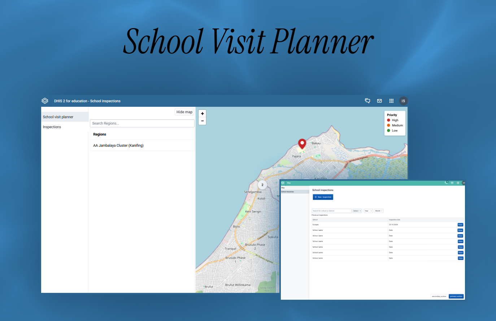

2025
School Visit Planner
En plattform som hjelper skoleinspektører med å prioritere besøk, gjennomføre inspeksjoner og følge utviklingen i skolens ressurser.
- Min rolle
- UX/UI-design & front-end utvikling
- Varighet
- 4 uker
- Verktøy
- Figma, React, DHIS2 UI
- Kontekst
- UiO · IN5320 - Development in platform ecosystems

01 · Problemet
Lettere organisering
Skoleinspektører trenger både oversikt og et effektivt verktøy i felt uten å miste sammenhengen mellom tidligere og nye data.
Oppgaven var å bygge et datainnsamlingsgrensesnitt for skoleinspeksjonerkoblet til DHIS2 sin plattform. Løsningen skulle gjøre det enkelt å registrere inspeksjonsdata, gi tydelig validering ved feil og hjelpe inspektøren med å velge hvilke skoler som burde besøkes først.
Problemstilling: Hvordan kan én arbeidsflyt støtte planlegging, inspeksjon og oppfølging uten å overvelde brukeren?
- 01Skoler måtte kunne prioriteres etter tid siden siste besøk og behov for oppfølging.
- 02Tidligere inspeksjonsdata måtte være tilgjengelig før og under et nytt besøk.
- 03Endringer i ressurser måtte vises relativt, ikke bare som tall.
02 · Prosessen
Designe i et etablert system
Vi kombinerte DHIS2 sitt designsystem med en iterativ prosess fra tidlige skisser til en integrert applikasjon.
Teamet startet med å bryte kravene ned til tre brukerhistorier: registrere inspeksjoner, planlegge skolebesøk og sammenligne ressurstellinger. Vi utforsket grensesnittet i Figma, bygget en MVP med React og DHIS2 UI-komponenter, og koblet løsningen mot API-et gjennom parprogrammering.
Førstegangsbrukere testet applikasjonen i to runder. Tilbakemeldingene ble brukt til å forbedre navigasjon, filtre, tilbakemeldinger og informasjonsflyt før de siste justeringene.
Vi skilte presentasjon, interaksjon, applikasjonslogikk og datatilgang slik at løsningen kunne videreutvikles uten å endre DHIS2-kjernen.
03 · Resultatet
Én sammenhengende flyt
Sluttproduktet samlet beslutningsstøtte, datainnsamling og historikk i en DHIS2-tilpasset plattform.
Inspektøren kan finne og prioritere skoler på kartet, åpne data fra tidligere besøk, registrere en ny inspeksjon og sammenligne nye ressurstellinger med tidligere data. Søk, filtre og visuell prioritering gjør store datamengder enklere å navigere.
Neste prosjekt